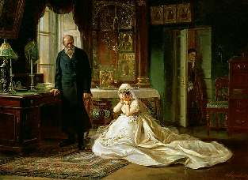
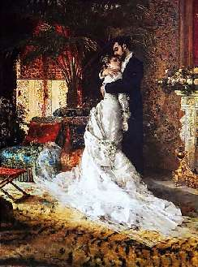

Борис Акунин
Мой календарь
Если вы живете в России или имеете российские корни, сегодня просто отличный день для того, чтобы сделать или принять предложение руки и сердца, а еще лучше - заключить брак.
Отмечается годовщина самого лучшего из всех многочисленных (и не всегда разумных) указов императора Петра Великого: о том, что всякий человек, даже холоп, не может быть принужден к браку против воли.
Поскольку это Россия, где запрещать любят больше, чем разрешать, высочайшее постановление имело вид запрета, нарушение которого каралось штрафом. Государь повелел, «дабы отныне родители детей и всякого звания люди рабов своих и рабынь к брачному сочетанию без самопроизвольного их желания отнюдь не принуждали и не брачили». С родителей и помещиков теперь каждый раз брали письменную клятву, что молодые вступают в брак по собственному желанию.
На картине Фирса Журавлева зарегистрировано нарушение закона суровым родителем-преступником.
Правильно жениться вот так:
Минус лишь в том, что потом на суровых родителей ответственность не свалишь.
Несколько более спорным выглядит другой петровский указ на ту же тему, выпущенный двумя годами ранее. Он назывался «О свидетельствовании дураков в Сенате», где среди прочего дуракам, которые «ни в науку, ни в службу не годятся», жениться строго-настрого воспрещалось. Речь шла не только и не столько о душевнобольных, сколько о дворянских сыновьях, отлынивающих от учебы и государственной службы. Фонвизинский Недоросль, хнычущий «не хочу учиться, хочу жениться» - жертва петровской деспотии.
Эх, вот бы царь еще выпустил закон, запрещающий жениться по-дурацки! Сколько людей, причитающих «какой же я был дурак, что женился», были бы Петру благодарны.